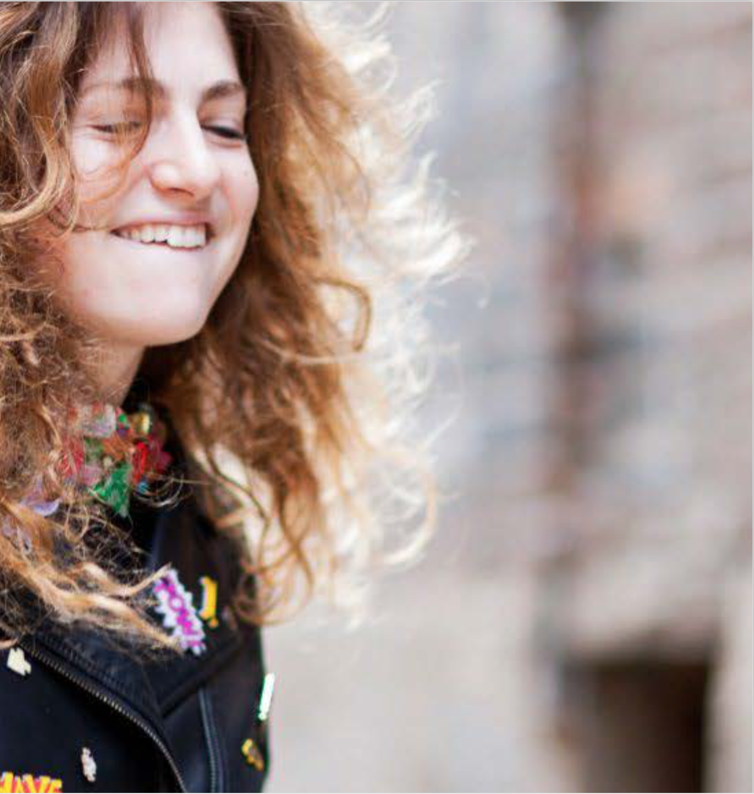

Fler est un magazine 100 % en ligne qui propose un contenu original dédié aux portraits et une parution régulière dans lequel apparaissent les portraits de personnes qui ne sont pas du tout où peu connues du grand public. Leur ambition rédactionnelle est de raconter « les gens » dans leur authenticité. Ce type de portraits est peu traité par les médias traditionnelles qui la plupart du temps rédigent des portraits à vocation promotionnelle ou liés à l’actualité. Le magazine en ligne souhaite pour ce faire refondre son site pour lui donner une nouvelle dynamique et séduire une cible fidéle.
